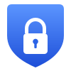
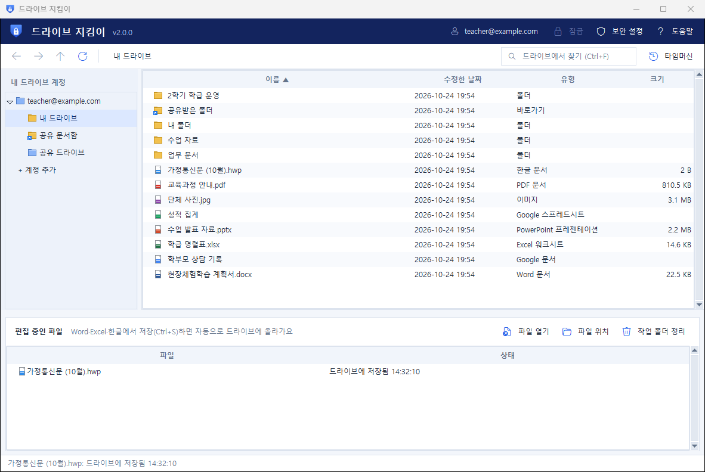
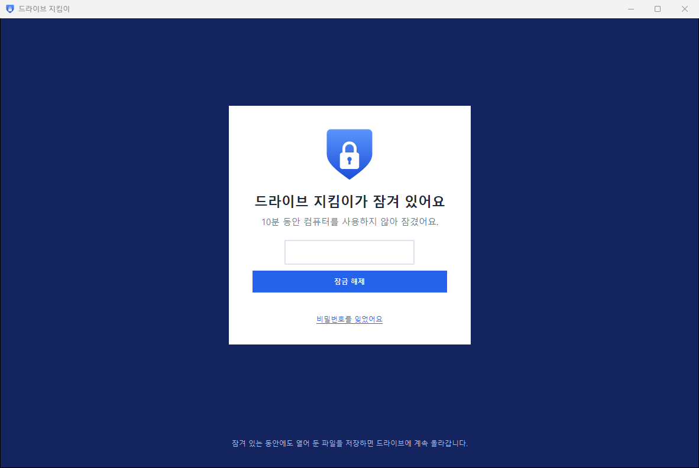

드라이브 지킴이
구글 드라이브를 비밀번호로 지키는 프로그램
사용설명서
🔒 비밀번호 잠금🛡️ 지우기 차단⏪ 타임머신💾 저장하면 자동 업로드

처음이어도 괜찮아요!
그림을 보며 따라 해요 😊
버전 2.0 · janghwansangai.github.io/drive-keeper
드라이브 지킴이는 어떤 프로그램인가요?
구글 드라이브를 컴퓨터에 연결해 쓰면 편하지만, 비밀번호가 없어서 그 컴퓨터를 쓰는 누구나 내 파일을 열어 보고, 고치고, 지울 수 있어요. 드라이브 지킴이는 이 빈틈을 막아 주는 지킴이예요.
😟 드라이브를 그냥 연결하면
• 비밀번호 없이 누구나 열 수 있어요
• 실수로 지우면 한꺼번에 사라질 수 있어요
• 수백 GB가 통째로 보여서 검사 프로그램이 느려져요
😊 드라이브 지킴이를 쓰면
• 비밀번호를 넣어야 열려요
• 이 프로그램으로는 파일을 지울 수 없어요
• 필요한 파일 하나만 꺼내 쓰고, 저장하면 저절로 올라가요
🔒
비밀번호 잠금켤 때, 자리를 비웠을 때, 절전에서 깼을 때 저절로 잠겨요.💾
저장하면 자동 업로드한글·Word·Excel에서 Ctrl+S만 누르면 드라이브에 올라가요.🛡️
지우기 차단프로그램이 해킹돼도 드라이브를 지우거나 공유를 바꿀 수 없어요.⏪
타임머신지운 파일을 되살리고, 예전 내용으로 되돌려요.👥
여러 계정집 계정, 학교 계정을 함께 넣고 골라 써요.🦠
랜섬웨어 대비파일이 이상하게 바뀌면 올리지 않고 원본을 지켜요.
차례
1. 준비물과 설치3쪽
2. 내 구글 열쇠 만들기4쪽
3. 열쇠 넣고 로그인하기6쪽
4. 화면 살펴보기·파일 쓰기7쪽
5. 비밀번호로 잠그기8쪽
6. 타임머신9쪽
7. 계정 추가·업데이트·지우기10쪽
8. 이럴 땐 이렇게 / 안전 약속11쪽
1준비물과 설치
준비물 🖥️ Windows 10·11 컴퓨터 · 📧 구글 계정(Gmail) · 🌐 인터넷
- 홈페이지에서 받기
인터넷 주소창에 janghwansangai.github.io/drive-keeper 를 쓰고, 파란 무료로 내려받기 단추를 눌러요. DriveKeeper.zip 파일이 받아져요.
- 압축 풀기
받은 파일에서 마우스 오른쪽 단추 → 모두 압축 풀기 → 압축 풀기
- 설치하기
새로 생긴 드라이브 지킴이 폴더에서 설치하기를 두 번 눌러요. 바탕화면에 드라이브 지킴이 아이콘이 생기면 끝!
- 파란 창이 뜨면 (처음 한 번)
Windows의 PC 보호
Microsoft Defender SmartScreen에서 인식할 수 없는 앱의 시작을 차단했습니다.
추가 정보실행실행 안 함
설치하지 않고 app 폴더의 DriveKeeper.exe를 바로 두 번 눌러 써도 돼요.
이 컴퓨터에 Google Drive 데스크톱이 켜져 있으면 G: 드라이브는 여전히 비밀번호 없이 열려요. 작업 표시줄의 구글 드라이브 아이콘 → 설정 → 종료, 시작할 때 자동 실행도 꺼 주세요.
2내 구글 열쇠 만들기 (처음 한 번, 약 5분)
드라이브 지킴이는 내 드라이브에 들어갈 때 나만의 열쇠를 써요. 다른 사람의 열쇠는 들어 있지 않아서, 내 드라이브는 오직 내 열쇠로만 열려요. 열쇠는 구글에서 무료로 만들어요.
프로그램의 도움말 → 내 구글 열쇠 만들기 안내를 열면 아래 화면을 바로 여는 파란 단추가 있어요. 모두 내 드라이브 구글 계정으로 해요.
① 프로젝트 만들기
console.cloud.google.com/projectcreate
Google Cloud 새 프로젝트
프로젝트 이름 *
drive-keeper
위치
조직 없음
만들기처음이면 나라(대한민국)를 고르고 약관에 동의해요.
② 드라이브 기능 켜기
…/apis/library/drive.googleapis.com
API 라이브러리 drive-keeper ▾
Google Drive API
Google
사용
맨 위 프로젝트가 drive-keeper인지 꼭 확인해요.
③ 앱 정보 쓰기
…/auth/overview
Google 인증 플랫폼 drive-keeper ▾
시작하기앱 이름
드라이브 지킴이
사용자 지원 이메일
내 이메일 ▾
대상
내부 외부
연락처 정보
내 이메일
정책에 동의합니다
만들기 순서: 시작하기 → 앱 이름·이메일 → 다음 → 외부 → 다음 → 이메일 → 다음 → 동의 체크 → 계속 → 만들기
2내 구글 열쇠 만들기 (이어서)
④ 나를 '테스트 사용자'로 넣기
…/auth/audience
대상 drive-keeper ▾
게시 상태: 테스트 중
테스트 사용자 + Add users
이메일
myname@gmail.com ← 내 Gmail 주소
저장 나중에 다른 계정도 쓰고 싶으면 여기에 그 주소도 넣어요.
⑤ 열쇠 파일 받기
…/auth/clients/create
OAuth 클라이언트 ID 만들기
애플리케이션 유형 *
데스크톱 앱 ▾
이름
드라이브 지킴이
만들기OAuth 클라이언트 생성됨
클라이언트 ID · 클라이언트 보안 비밀번호
JSON 다운로드
확인
[JSON 다운로드]는 이 창에서만 누를 수 있어요! 꼭 눌러서 client_secret_….json 파일을 받아요. 놓쳤다면 그 클라이언트를 지우고 ⑤를 다시 하면 돼요.
애플리케이션 유형은 꼭 데스크톱 앱이어야 해요. ‘웹 애플리케이션’으로 만들면 프로그램이 받아 주지 않아요.
🎉 열쇠를 다 만들었어요! 받은 파일은 보통 다운로드 폴더에 있어요. 이 파일은 다른 사람에게 주지 마세요.
3열쇠 넣고 로그인하기
드라이브 지킴이를 처음 켜면 시작 도우미가 떠요. (다시 열기: 도움말 → 시작 도우미)
- 1단계는 앞에서 한 ‘열쇠 만들기’예요. 이미 했으면 넘어가요.
- 다운로드 폴더에서 찾기를 누르면 받은 열쇠를 저절로 찾아서 넣어요. 다른 곳에 두었다면 직접 고르기.
- 로그인하기를 누르면 브라우저가 열려요. 열쇠를 만든 구글 계정을 골라요.
브라우저에서 이런 화면이 나와요
⚠ Google에서 확인하지 않은 앱
이 앱은 Google의 확인을 받지 않았습니다…
고급
drive-keeper(으)로 이동(안전하지 않음)
드라이브 지킴이에서 Google 계정에 액세스하려고 합니다
Google Drive의 모든 파일 보기, 수정, 생성…
취소 계속
- 고급 → drive-keeper(으)로 이동을 눌러요. 내가 만든 앱이라 나오는 안내라서 안전해요.
- 계속을 눌러요. 체크 칸이 있으면 체크하고 계속.
- ‘로그인이 완료되었습니다’가 나오면 브라우저를 닫고 프로그램으로 돌아와요. 왼쪽에 내 계정이 보이면 끝! 🎉
구글 규칙 때문에 7일에 한 번 다시 로그인해요. 때가 되면 브라우저가 저절로 열려요.
4화면 살펴보기 · 파일 쓰기
1
2
3
4
5
6
7
8
1잠금 — 누르면 바로 잠겨요 (Ctrl+L)
2보안 설정 · 도움말
3찾기 — 이름 일부를 쓰고 Enter
4타임머신 — 지운 파일·예전 내용
5계정 — 내 드라이브, 공유 문서함…
6파일 목록 — 두 번 누르면 열려요
7편집 중인 파일 — 올라갔는지 보여 줘요
8알림 줄 — 지금 일어난 일
파일 고치는 방법은 딱 세 가지!
- 파일을 두 번 눌러요 → 한글·Word·Excel이 열려요.
- 고치고 Ctrl + S로 저장해요.
- 아래 ‘편집 중인 파일’에 드라이브에 저장됨 14:32이 나오면 끝! 다른 컴퓨터에서도 바뀐 내용이 보여요.
‘다른 이름으로 저장’을 처음 뜨는 폴더에 하면 그 파일도 드라이브의 같은 폴더에 새로 올라가요. Google 문서·시트는 복사본으로 열리니, 원본은 오른쪽 클릭 → 브라우저에서 열기로 고쳐요.
5비밀번호로 잠그기
- 맨 위 보안 설정을 눌러요.
- 비밀번호를 두 번 써요. (4자 이상)
- 언제 잠글지 골라요.
· 프로그램을 켤 때
· 컴퓨터를 10분 동안 안 쓰면 (숫자는 바꿀 수 있어요)
· 절전 모드에서 돌아오면
- 저장. 이제 잠금 단추나 Ctrl+L로 언제든 바로 잠가요.
잠기면 이렇게 보여요

잠겨 있어도 열어 둔 파일을 저장하면 드라이브에 계속 올라가요.
비밀번호를 5번 틀리면 잠시 기다려야 해요. 잊었다면 잠금 화면의 비밀번호를 잊었어요 → 내 구글 계정으로 로그인하면 새로 정할 수 있어요. 모두 끄려면 보안 설정 → 모든 잠금 끄기.
6타임머신 — 지운 파일·예전 내용 되돌리기
실수로 지운 파일 되살리기
- 맨 위 타임머신을 눌러요.
- 되살릴 파일을 골라요. 안 보이면 이름 일부를 쓰고 찾기.
- 선택한 항목 되살리기 → 원래 폴더로 돌아가요!
구글 드라이브는 지운 파일을 30일 동안 휴지통에 보관해요.
잘못 저장했을 때 예전 내용으로
- 파일을 오른쪽 클릭 → 이전 버전 보기.
- 저장한 때를 보고 골라 이 버전 열어보기로 확인해요.
- 맞으면 이 버전으로 되돌리기. 지금 내용도 남아서 다시 돌아올 수 있어요.
한글·Word·Excel 파일의 예전 버전은 30일 동안, 최대 100개까지 남아요.
이 프로그램은 휴지통에서 꺼내는 것만 할 수 있어요. 지우는 건 못 해요. 그래서 안전해요!
7계정 추가 · 업데이트 · 지우기
👥 다른 구글 계정 더 넣기
- 2장 ④처럼 내 프로젝트의 테스트 사용자에 그 계정 주소를 넣어요. (도움말 → 다른 계정 추가 방법에 바로 가는 단추가 있어요)
- 왼쪽 맨 아래 + 계정 추가 → 브라우저에서 그 계정을 골라요.
- ‘확인하지 않은 앱’ → 고급 → 이동 → 계속. 왼쪽에 새 계정이 생겨요.
계정을 빼려면 왼쪽 계정 이름에서 오른쪽 클릭 → 계정 제거. 드라이브의 파일은 그대로예요.
🔄 새 버전으로 바꾸기
새 버전이 나오면 오른쪽 아래에 새 버전 받기 단추가 생겨요. 눌러서 받은 파일을 압축 풀고 설치하기를 다시 하면 돼요. 로그인과 기록은 그대로 남아요.
🗑️ 프로그램 지우기
지우기를 두 번 누르거나, Windows 설정 → 앱 → 드라이브 지킴이 → 제거. 마지막에 로그인 정보와 작업 폴더까지 지울지 물어봐요. 구글 드라이브의 파일은 지워지지 않아요.
🗂️ 내 정보는 어디에 있나요?
| 무엇 | 어디 |
|---|
| 로그인 정보·기록·받은 파일 | C:\Users\내이름\DriveKeeper (로그인 정보는 암호화돼 있어요) |
| 프로그램 | C:\Users\내이름\AppData\Local\Programs\DriveKeeper |
8이럴 땐 이렇게
| 이런 일이 생기면 | 이렇게 해요 |
|---|
| ‘앱 열쇠가 아직 없어요’ | 도움말 → 시작 도우미에서 열쇠를 넣어요 (2·3장). |
| 로그인할 때 ‘액세스 차단됨’ | 2장 ④에서 그 계정을 테스트 사용자로 넣었는지, 주소에 오타가 없는지 확인해요. |
| 학교 계정이 ‘관리자가 차단’ | 학교 관리자에게 허용을 부탁하거나 개인 계정을 써요. |
| 저장했는데 안 올라가요 | 아래 ‘편집 중인 파일’의 글을 읽어요. 인터넷이 끊겼으면 연결되면 저절로 올라가요. |
| ‘충돌 사본’ 파일이 생겼어요 | 다른 컴퓨터에서 같은 파일을 고쳤어요. 원본은 그대로 두고 내 것은 사본으로 남겼으니 둘을 비교해 정리해요. |
| ‘업로드 보류’라고 나와요 | 파일이 깨졌거나 바이러스 의심이에요. 파일을 열어 확인하고, 정상이면 오른쪽 클릭 → 그래도 업로드. 여러 개면 백신 검사! |
| 7일마다 로그인 창이 떠요 | 정상이에요 (구글 규칙). 다시 로그인하면 돼요. |
| 파란 ‘PC 보호’ 창 / 백신이 막아요 | 추가 정보 → 실행. 백신은 홈페이지에서 받은 파일인지 확인 후 허용, 학교 PC는 관리자에게 물어봐요. |
| 비밀번호를 잊었어요 | 잠금 화면의 비밀번호를 잊었어요. |
🛡️ 드라이브 지킴이의 안전 약속
지우지 못해요이 프로그램은 드라이브의 파일을 지우거나 휴지통에 넣거나 공유를 바꾸는 요청을 보낼 수 없게 만들어졌어요.
내 열쇠만 써요개발자의 계정·서버가 없어요. 내 파일은 내 컴퓨터와 내 구글 드라이브 사이에서만 오가요.
암호화해서 보관해요로그인 정보는 이 컴퓨터의 내 Windows 계정으로만 풀리게 잠가 둬요.
함께 지켜요Windows 비밀번호, 자리 비울 때 ⊞ Win+L, 백신, 구글 2단계 인증을 꼭 써요.